Bring your own AI provider
In Settings → AI / LLM you use your own API key. There is no AI subscription and no markup. Anthropic (Claude), OpenAI, and a local Ollama model are supported.

Automate discovery, topology mapping, compliance, and changes across the network, from one desktop app. Config Backup runs when you start it. No agent on the devices. No cloud. Everything stays on the laptop.
Bring your own AI provider. Professional uses your own API key. There is no AI subscription and no markup. Anthropic (Claude), OpenAI, and a local Ollama model are supported.
Free Edition is up to 25 devices, with no time limit. It is not a trial.
Bring your own AI provider. It uses your own API key. There is no AI subscription and no markup. Professional sends a task, a report, or the whole estate to the provider you chose. You opt in for that run. Free can show you the anonymised payload. It never sends it.
In Settings → AI / LLM you use your own API key. There is no AI subscription and no markup. Anthropic (Claude), OpenAI, and a local Ollama model are supported.
Reports: inventory, end-of-life and lifecycle, and the Security Audit PSIRT checks. End-of-task summaries, including topologies, the compliance audit, and Find Device. The lifecycle replace or upgrade plan. The firewall analyser AI advisor. On the Monitor tab, Ask AI for one device.
The prompts cast the model as a senior network operations analyst, a security analyst, or a principal network architect. The reply is meant to read like someone who has run a network, not a generic chatbot.
The anonymiser is on by default. It replaces IPv4 and IPv6 addresses, MAC addresses, serial numbers, and hostnames and FQDNs with tokens such as [IP_1] and [HOST_1] before anything leaves the machine, then puts the real values back locally. You read real names. The provider does not. An optional preview shows the exact payload before you approve it. Nothing is sent unless you opt in for that run. With a local Ollama model, nothing leaves your network at all.
Professional can review the entire estate, or one site, the way an architect reviews a design: single points of failure, the addressing plan, design risks, and an overall architecture view. You can also chat with the AI about the whole network.
On Free you can open the anonymised payload and read what would have been sent. Nothing is ever sent. Configuring a provider, and sending, is the upgrade to Professional.
Discovery, maps, push at scale, and compliance. Scheduled backups come with Node Control Server. Professional is the full product. Cards marked Pro are not in Free Edition.
Give it a seed IP. CDP, LLDP, and SNMP walk the neighbours and build an inventory.
L2, L3, and WAN maps. Right-click a node for SSH, ping, traceroute, or a table lookup. Free Edition draws the L2 map. L3 and WAN are Professional Pro.
Broadcast commands across the fleet, or to one device. Safe mode, config mode, a dry run, and config compliance.
Scheduled config backups ship with Node Control Server, not in the current desktop editions. Config Backup and Save Config run when you start them. Both are in Free Edition.
Command mode, a full interactive terminal, or HTTPS in the embedded browser. Free Edition includes the multi-vendor terminal.
Call Cisco ISE, Catalyst Center, Cisco SD-WAN (vManage), Meraki, Panorama, and Palo Alto PAN-OS from the app and read the response in place. More integrations on the way.
IOS-XE embedded packet capture. The file is copied off the switch and opened in Wireshark.
Push or pull a file between this laptop and device flash over SCP or TFTP. The File Transfer page, a local SFTP and SCP server, is in Free Edition.
Bring your own AI provider, with your own API key. No AI subscription and no markup. Anthropic (Claude), OpenAI, and local Ollama are supported. Reports, task summaries, the firewall analyser, and an architect review of the estate. The anonymiser runs first.

A dark-themed interface designed for engineers who need real visibility and insights — not dashboards built for managers, with stats that mean nothing.
Layer 2, Layer 3, and WAN topology maps with interactive overlays, link highlighting, and right-click context menus.
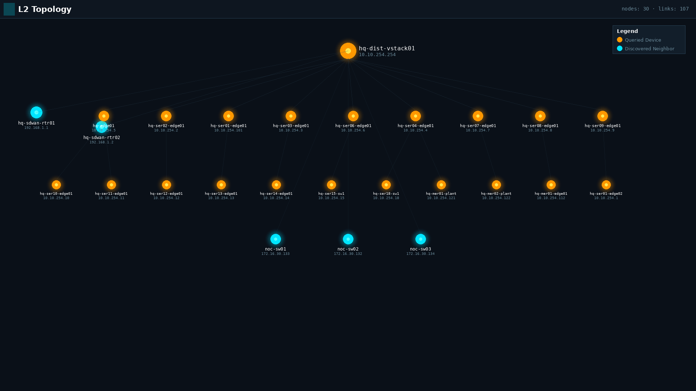
L2 Topology — Full Network View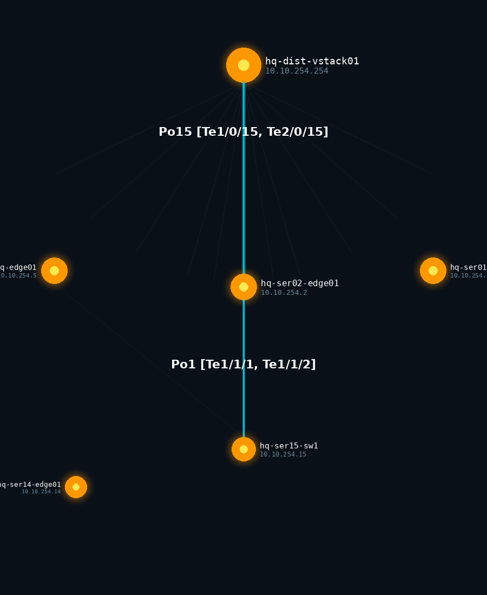
L2 — Link & Interface Highlighting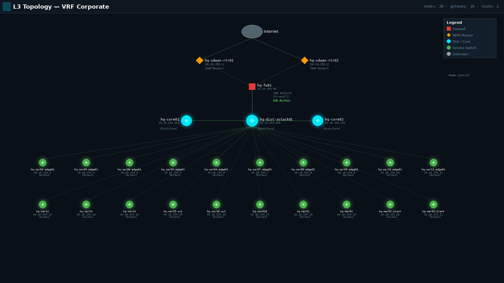
L3 Topology — VRF CorporateVLANs, MAC tables, route tables, traceroute — all one right-click away from any node on the topology.
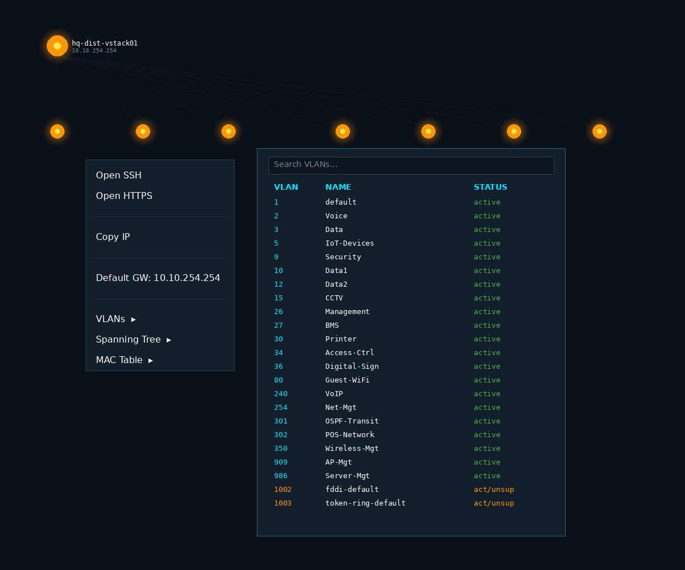
VLAN Table Lookup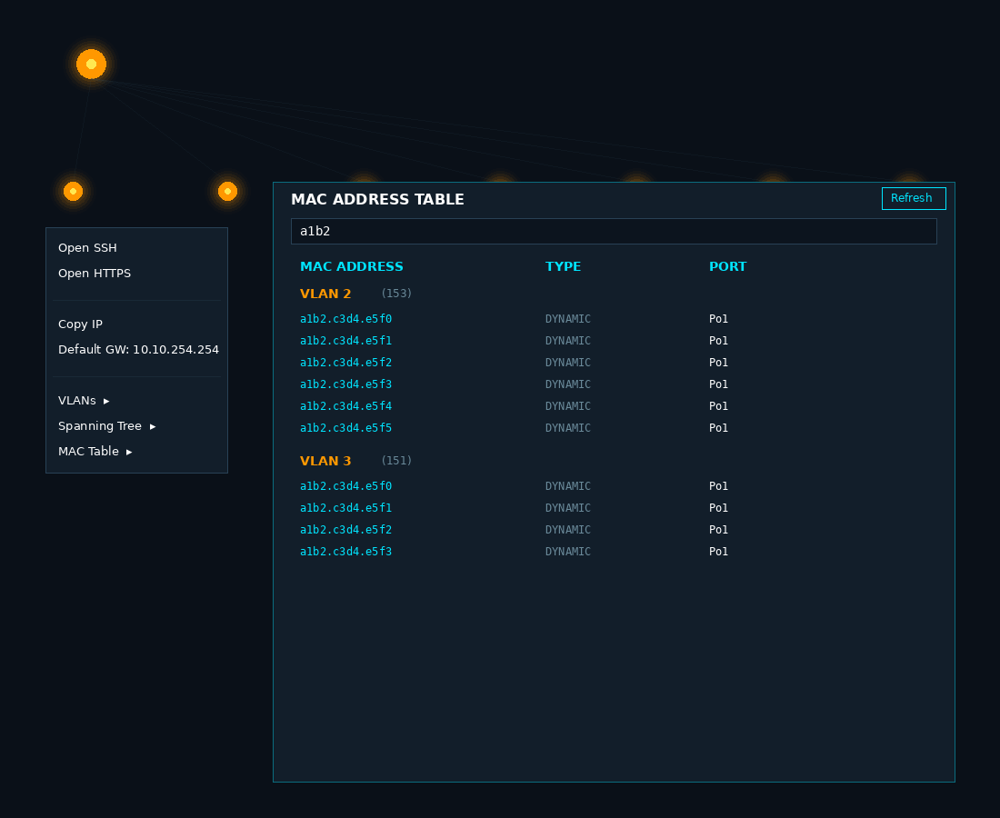
MAC Address Table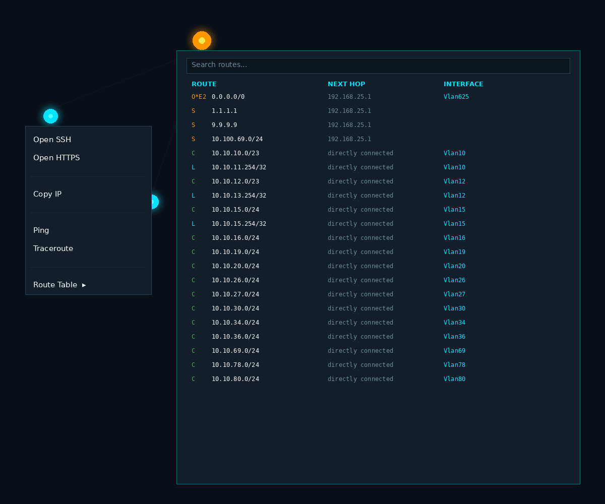
Route Table with Search Fast Traceroute
Fast Traceroute
Multi-device SSH or HTTPS sessions with command mode or full interactive terminal mode, with broadcast-to-all. Ships with safe mode or config mode for peace of mind — in safe mode only show and non config-changing commands can be entered.
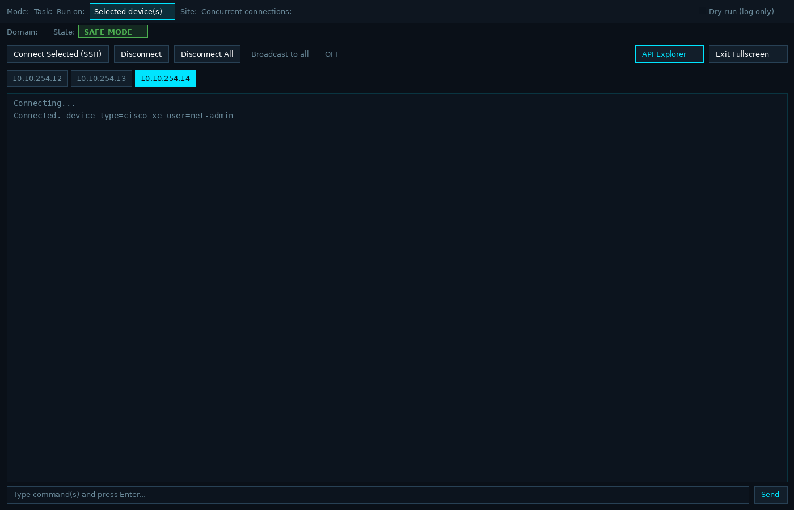
SSH — Command Mode (Safe)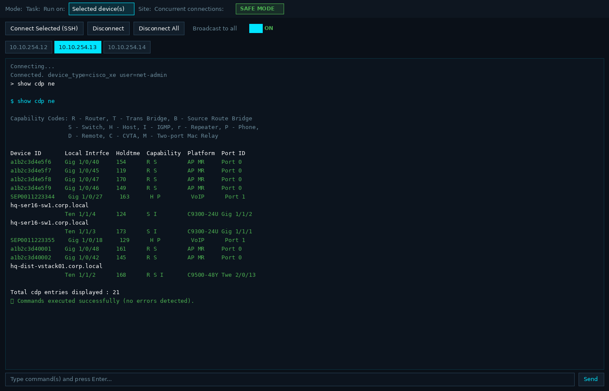
Broadcast — CDP Neighbors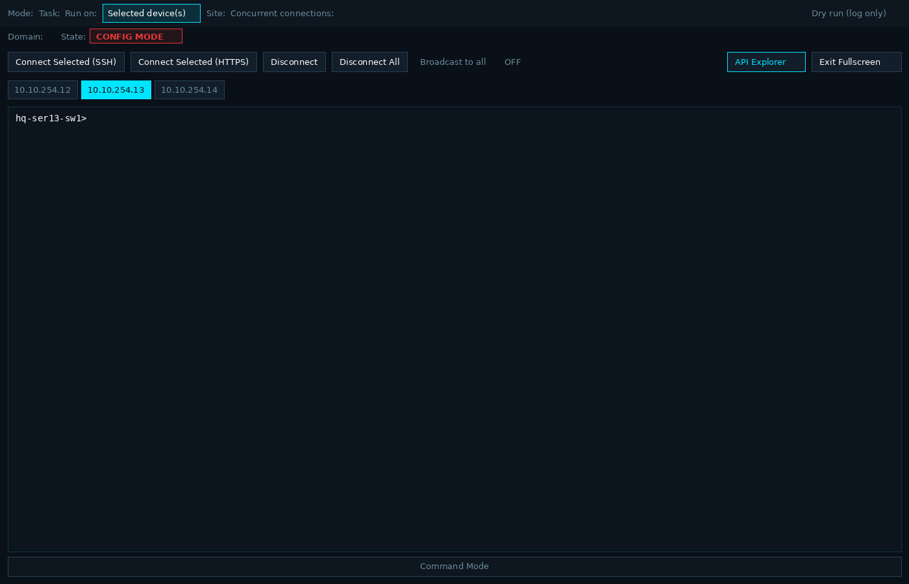
Interactive Terminal — Config Mode HTTPS — Embedded Browser
HTTPS — Embedded Browser
Query Cisco ISE, Catalyst Center, Cisco SD-WAN (vManage), Meraki, Panorama, and Palo Alto PAN-OS directly. JSON response view with readable table output. Professional. More integrations on the way.
 Meraki — List Networks with Readable View
Meraki — List Networks with Readable View
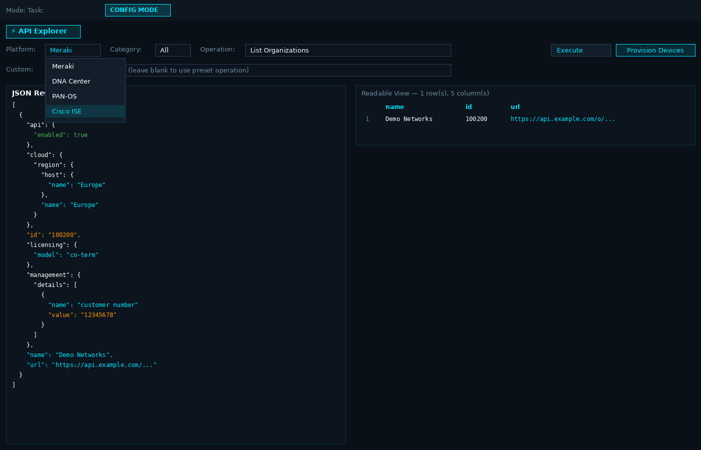
JSON Response & Readable ViewFull-mesh SD-WAN topology visualization. Every site, every tunnel, every route — on one screen. Right-click any router to inspect route tables, trace paths, or open an SSH session.
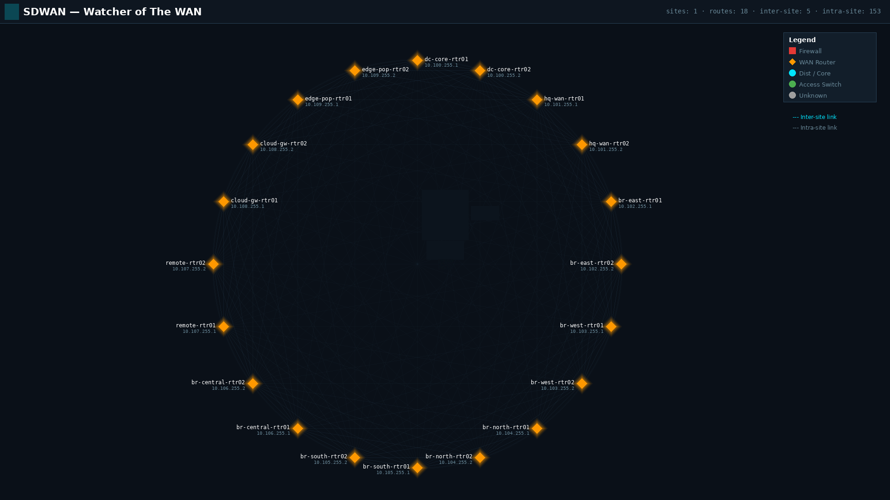
Full-Mesh SD-WAN Topology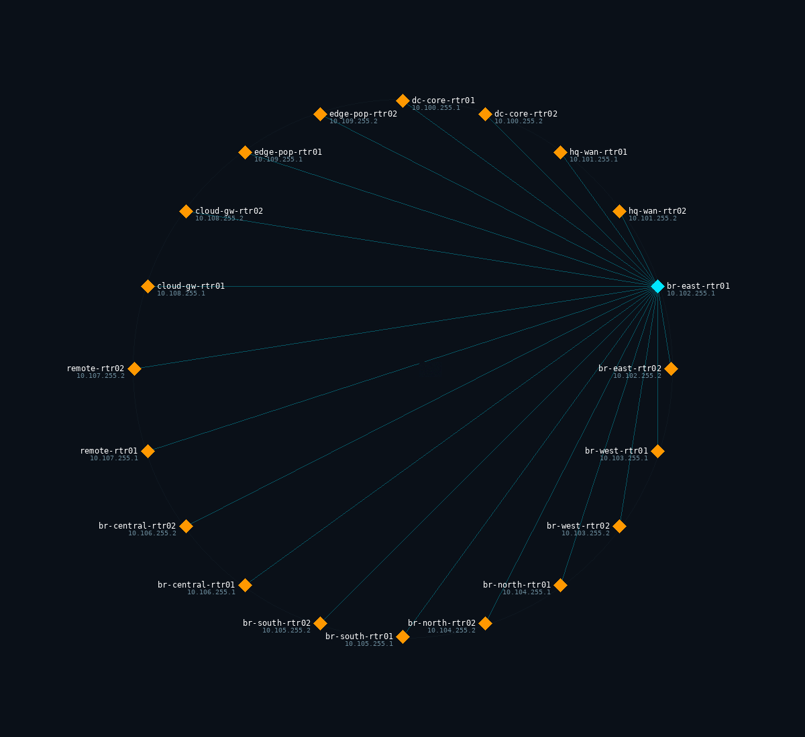
Select a Device — See All Its Tunnels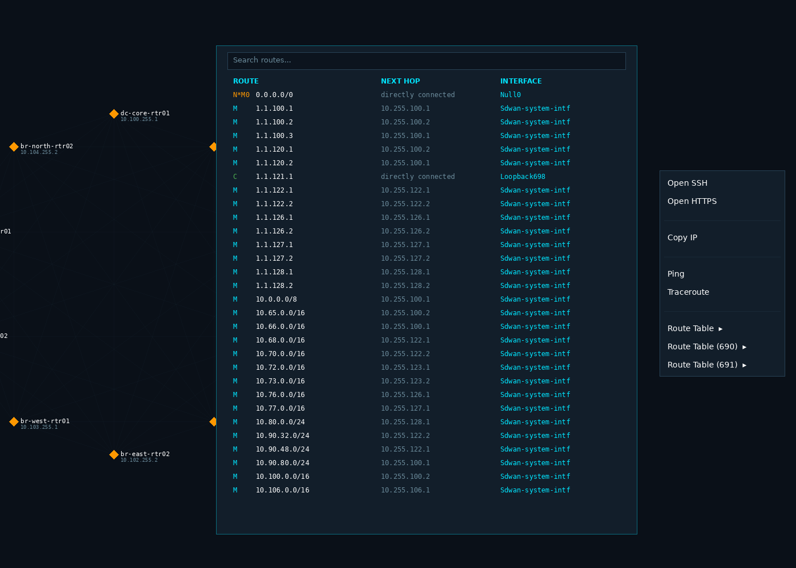
SD-WAN Route Table LookupYour network data stays on your machine. Pick your edition and platform below.
Works with Cisco IOS, IOS-XE and NX-OS, Meraki, Palo Alto, HP/Aruba, Juniper, Arista, Dell and Extreme.
Node Control Free downloads are temporarily paused while we ship an update (v0.9.41). Please check back soon.
Enter your details and we'll email you a verification code instantly.
Enter your code below to access your download.
Unlimited devices — L2/L3/WAN topology, Watcher of The WAN, and API Explorer. Scheduled backups come with Node Control Server.
£25/month ex VAT, or £255/year ex VAT£21.25/mo billed annually, ex VAT. Save 15%.
A separate product from Professional. Nine specialist agents, on infrastructure you host, so the AI runs entirely inside your network. Not yet available to buy, and not a download from this page.
Simple pricing. No per-device fees. No cloud lock-in.
UK VAT (20%) is added at checkout where applicable. Business customers can add a VAT number.
For individual engineers
Or £255/year ex VAT (£21.25/mo billed annually, ex VAT, save 15%).
For network teams. Cancel and access runs to the end of the period you have paid.
For large organisations
Free Edition is up to 25 devices, with no time limit. It is not a trial.
| Free Edition | Professional | |
|---|---|---|
| Price | Free | £25/month ex VAT, or £255/year ex VAT (£21.25/mo billed annually, ex VAT) |
| Devices | Up to 25, no time limit | Unlimited |
| L2 Topology Builder | Yes | Yes, plus L3 and WAN |
| Config Backup | Yes | Yes, when you run it. Scheduled backups Coming with Node Control Server |
| Save Config | Yes | Yes |
| Find Device | One switch at a time | Site and cores, plus Meraki wireless |
| Inventory report | Yes | Yes |
| File Transfer | The tab only. Not the File Transfer task, and not Packet Capture | The tab, the File Transfer task, and Packet Capture |
| Custom scripts | A script can be registered. It does not run | Yes |
| IPAM | No | Yes |
| Meraki Configurator | No | Yes |
| Firewall analyser | No | Yes |
| Compliance and config push | No | Yes |
| Monitor | No | Yes |
| Discover | No | Yes |
| API Explorer | No | Cisco ISE, Catalyst Center, Cisco SD-WAN (vManage), Meraki, Panorama, and Palo Alto PAN-OS. More integrations on the way. |
| Watcher of The WAN | No | Yes |
| AI provider | Preview only. You can read the anonymised payload. Nothing is sent | Bring your own AI provider, with your own API key. No AI subscription and no markup. Anthropic (Claude), OpenAI, and local Ollama |
| Anonymiser | You see the tokens. Nothing leaves the machine | On by default. IPs, MACs, serials, and hostnames become tokens such as [IP_1] and [HOST_1], then the real values are restored locally |
| Architect review and network chat | No | Yes, from 0.9.40. The whole estate or one site |
Enter the email you used at checkout. If it has a subscription, we email a link to cancel or update the card. The reply is the same either way.
A separate product from Professional. Nine specialist AI agents run on infrastructure you host, so the AI stays entirely inside your network. An on-prem GPU server is one example. It is not yet available to buy.
Professional is the product you can get today. Its AI is a provider you bring, on the laptop, with your own API key. There is no AI subscription and no markup. Anthropic (Claude), OpenAI, and local Ollama are supported. The AI edition is the nine-agent system. It does not share a price, a buy button, or a download with Professional.
Get up and running quickly with our guides and references.
Have questions, need support, or want to discuss enterprise licensing?